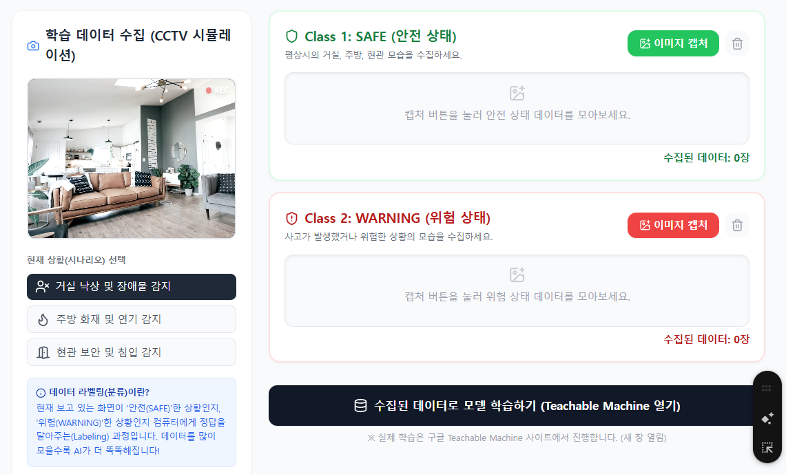
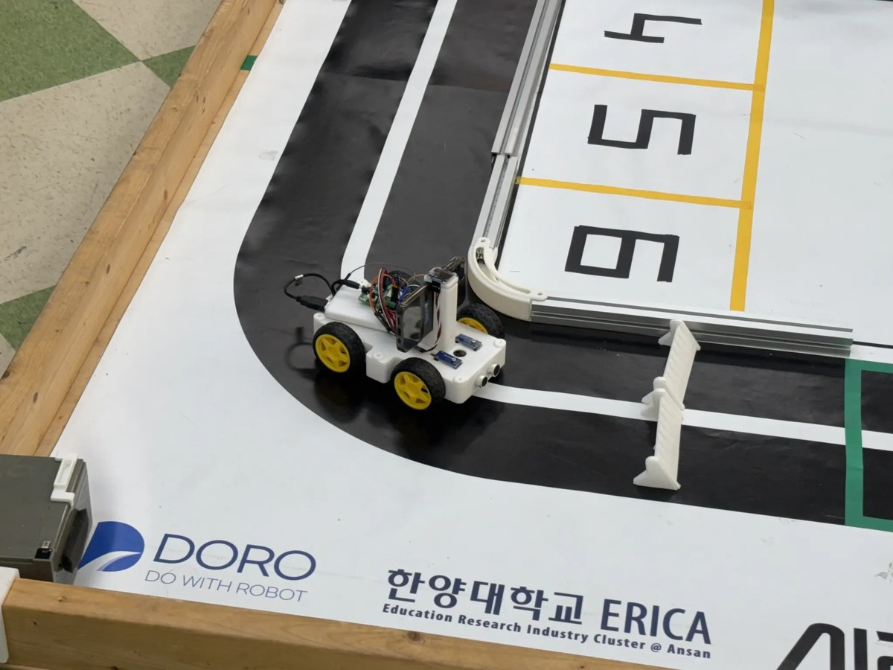
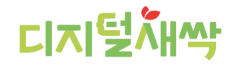
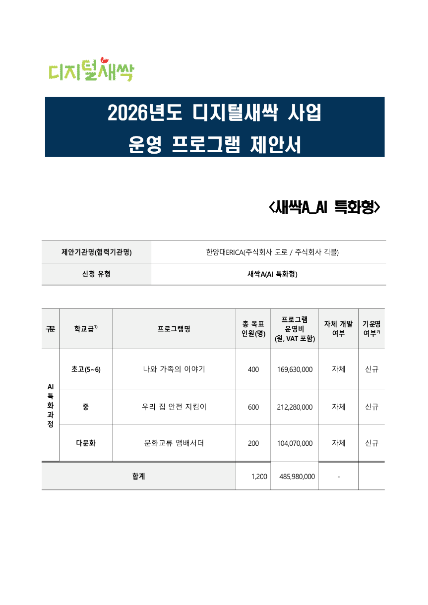
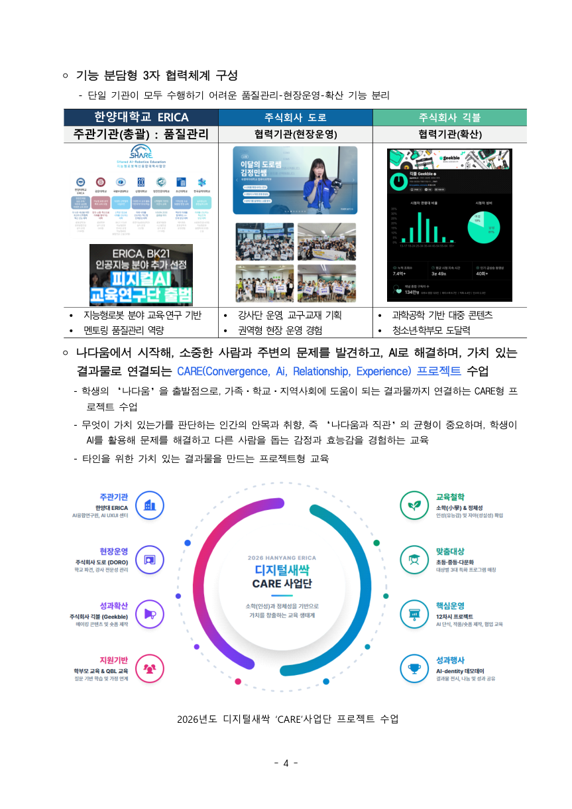
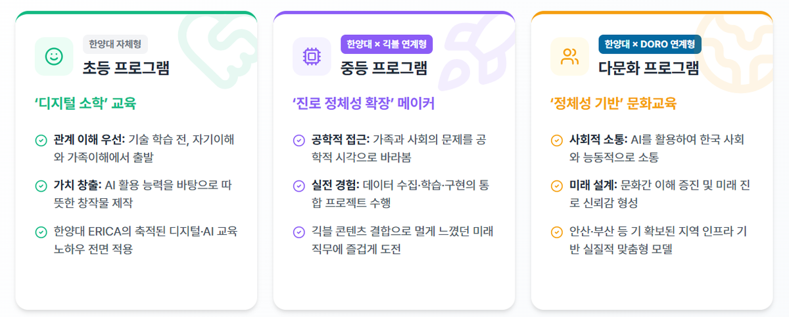
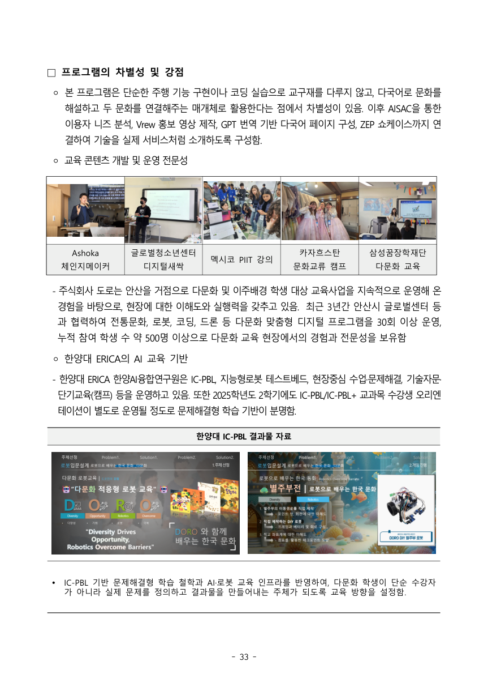
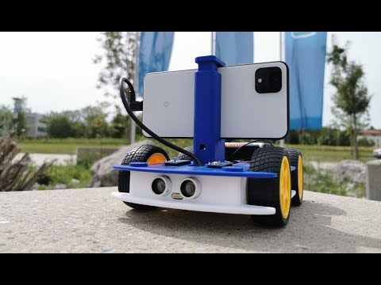
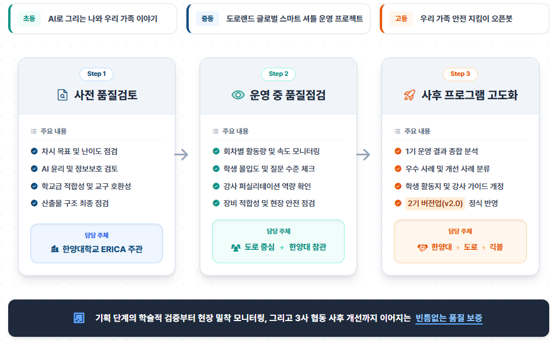
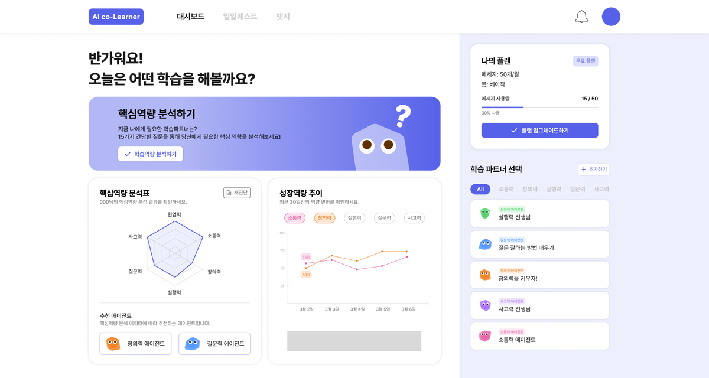

AI 우리학교 안전지도
농어촌·교육복지·도서벽지 대상. 위험요소 사진·센서 데이터를 수집하고 AI 분류와 안전지도, 알림 로봇으로 연결.
기존 ‘우리 집 안전 지킴이’의 문제해결성을 학교·지역으로 확장

2026 디지털새싹 추가모집 대응
기존 새싹A 제안서를 새싹C AI 활용 문제해결형 기준으로 재설계하기 위한 분석 슬라이드
Diagnosis
초·중·다문화 3종, 총 1,200명, 12차시 프로젝트형
디지털 취약계층 전용, 총 2,200명 이상, 8차시 기본과정
6억 원 / 1,200명 기준. 장비·전시·확산비가 무거운 구조
2,200~2,400명 운영을 전제로 한 교구 재사용·순회형 구조

RFP Fit
선정 규모
11개 내외기관당 6억 원 이내프로그램
3종 필수AI 활용 문제해결형 기본과정교육 목표
2,200명+방과후 2,000명 포함대상 한정 도서벽지, 농어촌, 교육복지, 다문화, 특수교육 학교만 운영 가능
모듈 구조 진입-도약-성장 3단계, 각 단계 2차시 이상 독립 운영
난이도 기본과정 수준. 선행학습을 유발하지 않고 학교교육 보완
심사 포인트 서류는 기관역량·목표·프로그램이 균형, 발표는 프로그램 50점
주의 추경 예산 여부는 제안서 본문에 사실처럼 쓰지 말고 교육격차 해소 공급 보완으로 표현
Selected Program Pattern
기관-프로그램 중복 제거 기준, 키워드 중복 허용
생활·학교·지역 문제를 정하고, 학생이 데이터를 만들고, AI 도구로 판단하거나 생성하고, 로봇·웹앱·지도·대시보드 같은 결과물로 완성합니다.
What To Keep
한양대ERICA 사업 총괄, 교육과정 설계, 품질관리, 성과평가
DORO 학교 섭외, 강사 모집·연수·배치, 교구·현장 운영
기존 CARE 모델 감성·관계 중심 장점은 유지하되 취약계층 문제해결 언어로 재번역

Gap Matrix
Strategic Pivot
좋은 교육철학이지만 새싹C의 취약계층·문제해결·단가검증 요구와 직접 연결이 약함
데이터 수집, AI 판단, 피지컬 컴퓨팅, 결과 해석, 학교 재사용 자료까지 완결

Program Redesign

농어촌·교육복지·도서벽지 대상. 위험요소 사진·센서 데이터를 수집하고 AI 분류와 안전지도, 알림 로봇으로 연결.
기존 ‘우리 집 안전 지킴이’의 문제해결성을 학교·지역으로 확장
다문화 학생과 일반 학생 혼합반. 번역, TTS, 픽토그램, QR 안내로 학교생활 안내와 지역 문화 소개물을 제작.
문화 표현에서 학교 소통 문제 해결로 전환
특수교육·교육복지·농어촌 대상. 공기질, 에너지, 분리배출, 접근성 문제를 센서와 로봇으로 해결.
DORO의 로봇교육 실행력을 가장 직접적으로 보여주는 축8-Session Module
대상 학생의 생활·학교 문제를 찾고, AI가 할 수 있는 일과 한계, 개인정보·저작권·편향을 다룹니다.
사진·센서·문장 데이터를 수집하고 정리합니다. Teachable Machine, 생성형 AI, 번역·TTS 등 쉬운 도구를 사용합니다.
로봇, 지도, 안내 페이지, QR 포스터, 대시보드 등 결과물을 만들고 오류를 개선한 뒤 학교에 공유합니다.
Operation Design

권역 수치는 제안용 가안입니다. 실제 제출 전 수요확인서와 강사 가용표로 숫자를 잠가야 합니다.
Budget Reset
줄일 항목 장기 노트북·에그 임차, 전시 장비, 홍보 영상, 과도한 성과공유회 비용
살릴 항목 강사비, 현장 교구 순환, 안전관리, 취약지역 출장, 교재·활동지 품질
명시할 항목 범용 교구 20만 원 이내, 일회성 교구 10만 원 이내, 주관기관 예산 50% 이상

Writing Sprint
한양대ERICA의 교육 품질관리와 DORO의 현장 로봇교육 실행력을 결합해, 디지털 취약지역 학생이 자기 학교와 지역의 문제를 AI·데이터·피지컬 컴퓨팅으로 해결하는 8차시 모듈형 기본과정을 전국 균형형으로 운영한다.